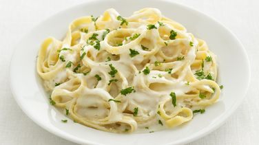

Description
This is a simple to make recipe that yields a staple dish for lucnh or dinner any day of the week!
This dish is perfect for a delicious substitution to our daily lunch. Prepare fast and enjoy fast!
Ingredients
- 8 ounce pasta
- 4 tablespoon butter
- 2 cloves garlic
- 1 1/2 cups milk
- 1 cup heavy cream
- 1/2 cup Parmasean cheese
- 1/4 teaspoon salt
- 1/4 teaspoon pepper
Steps
- Cook the pasta in boiling water
- Melt the butter in a large skillet over medium heat and add the garlic
- Pour in the milk and cream and stir
- Mix in the salt and pepper when the sauce comes to a boil and turn off the heat
- Mix in the pasta and let cool for 10 minutes before serving